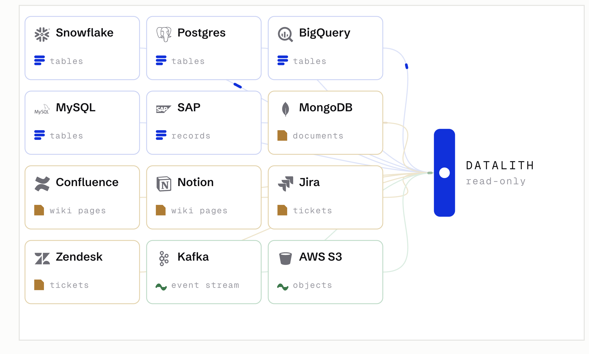
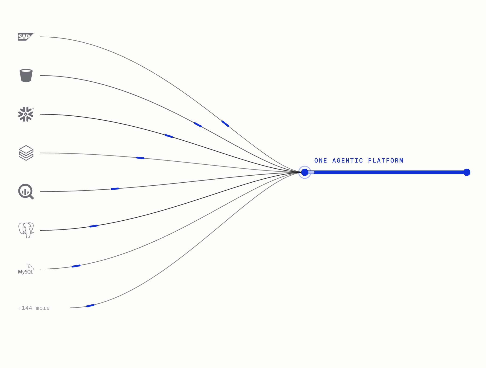
Readiness console · proposed agents
Live
W-01Data for agents
Datalith
Maps a whole data estate into one knowledge graph, scores it for agent-readiness, and serves it through a governed MCP gateway.
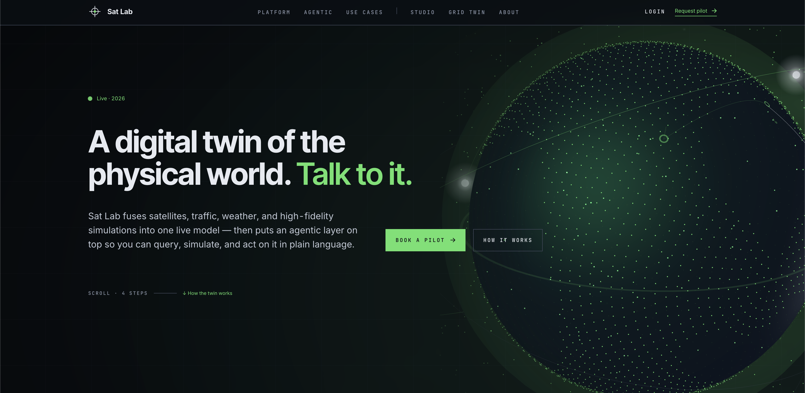
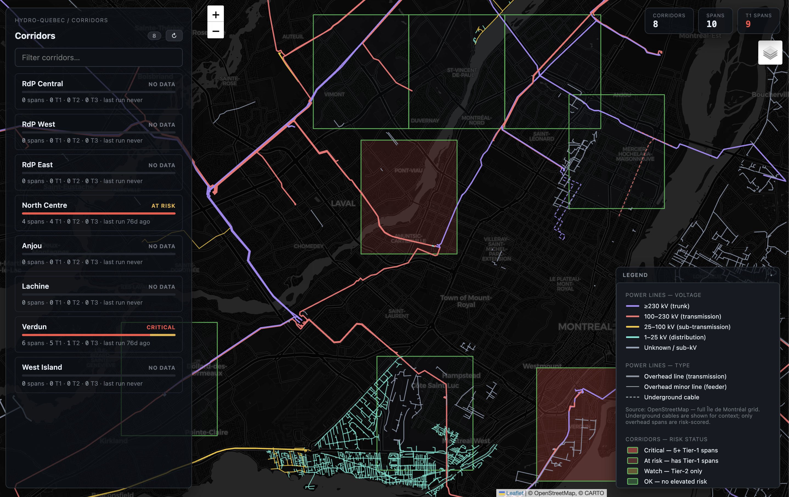
Twin console · agent tools
Live
W-02Geospatial AI
Sat Lab
Satellite imagery and AI predict where trees will bring down a line, then render it inside a live digital twin.
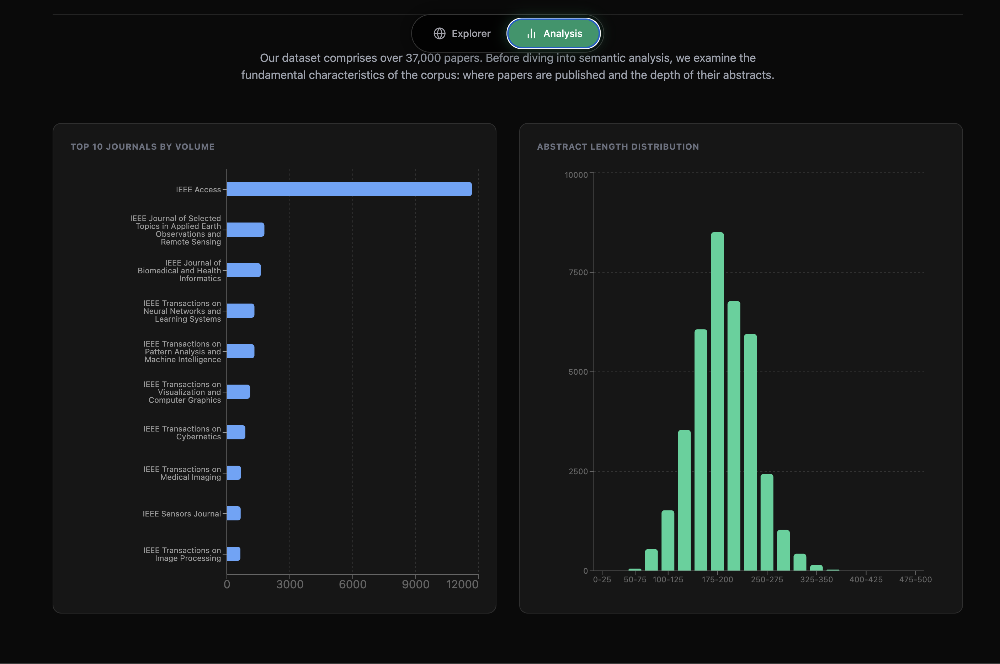
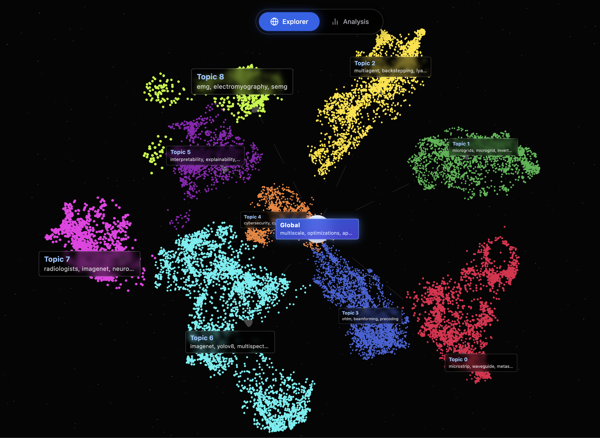
37 000 papers · topic space
Live
W-03Embeddings · 3D
IEEE Vis Explorer
OpenAlex → embeddings → UMAP → HDBSCAN → LLM-labelled clusters. Fly through a decade of research.
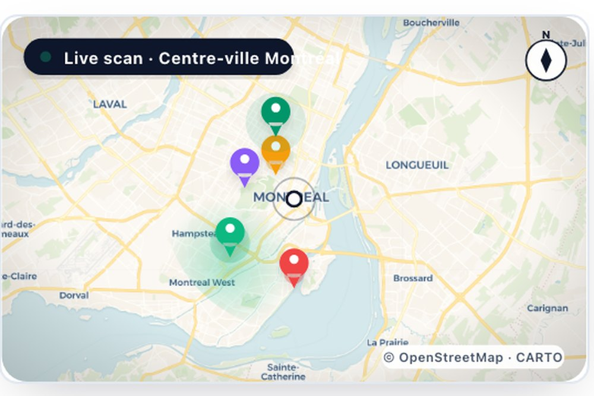
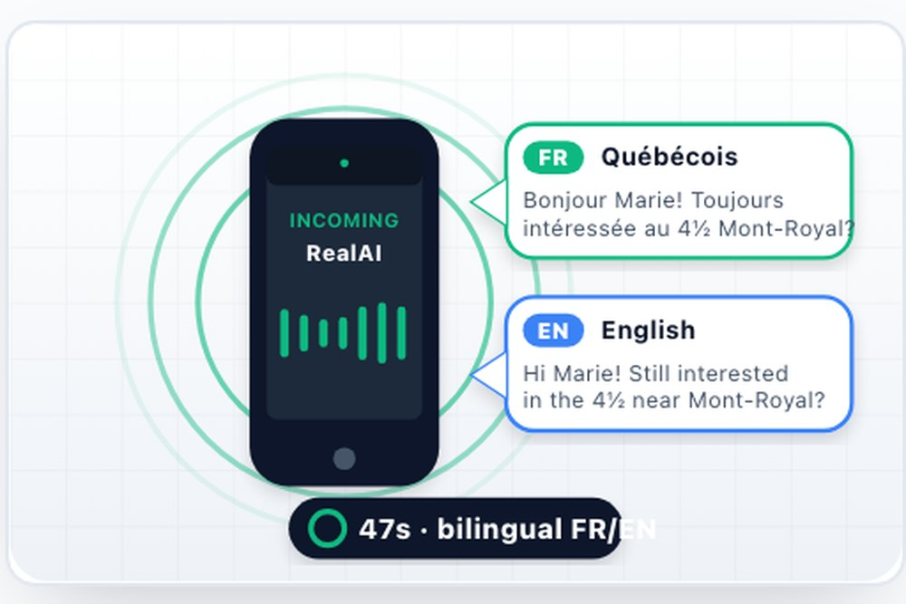
Lead map · bilingual voice agent
Live
W-04Vertical agents
RealAI
Prospecting, voice response, listing content, Bill 96 compliance, expired-listing recapture. Bilingual FR/EN.
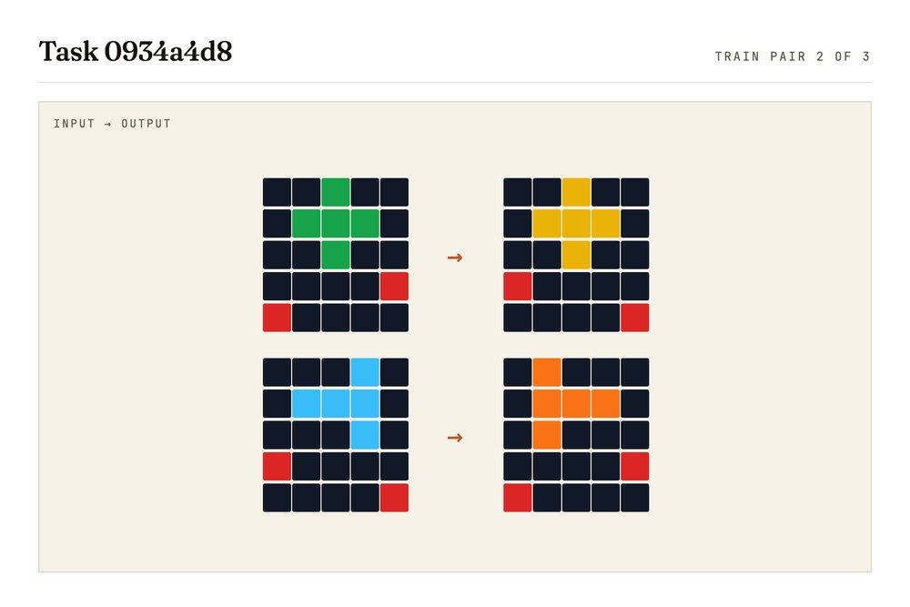
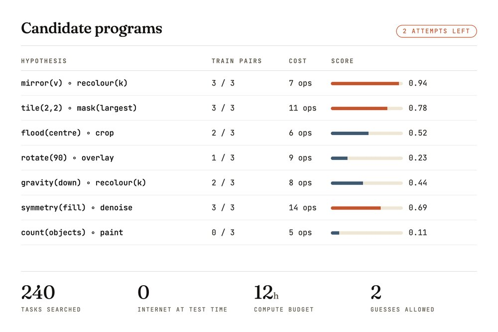
Task grids · candidate programs
Kaggle
W-05Reasoning agents
ARC Prize 2026
Three competition entries. Submissions run fully offline — a test fails the build if that boundary is crossed.

 Ray-traced power map · LiDAR
Live
Ray-traced power map · LiDAR
Live
W-06Research flagship
MVX
A physics world simulator married to a differentiable ray-traced wireless simulator. Backbone of my Ph.D.
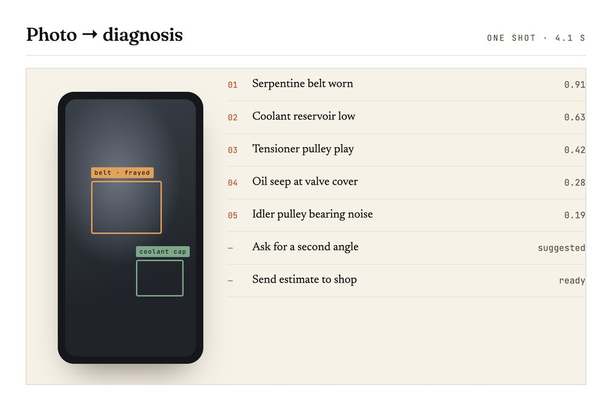
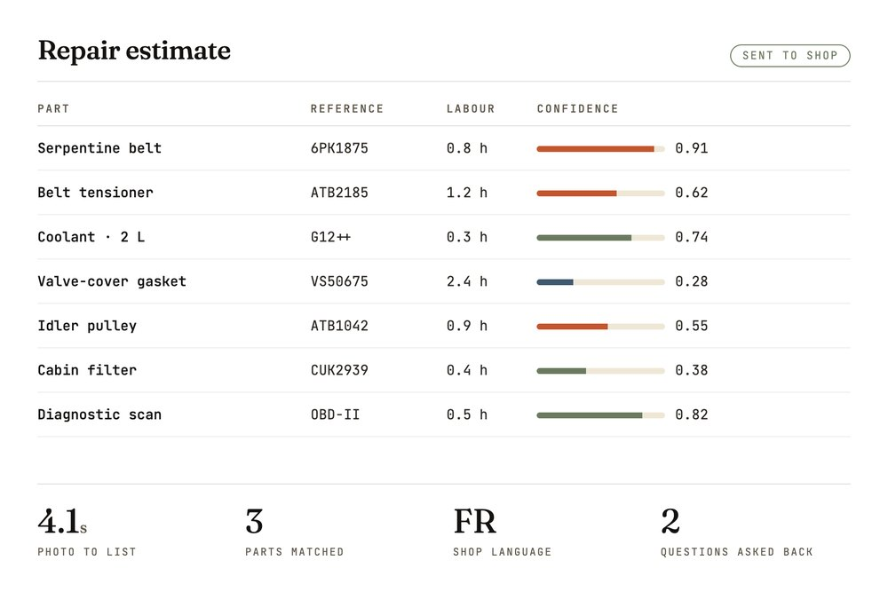
Photo → ranked faults
Private
W-07Multimodal · mobile
Car repair diagnosis from a photo
MecAI
Photo plus symptoms in, ranked diagnosis out, on a deterministic ingestion pipeline that is always safe to re-run.
Expo · Cloud Run · Azure OpenAIPrivate · demo on request
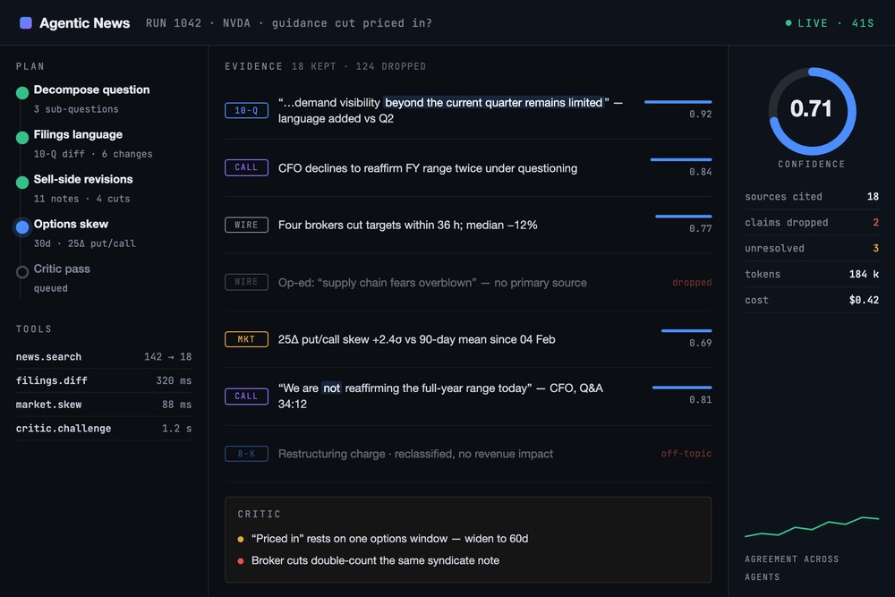
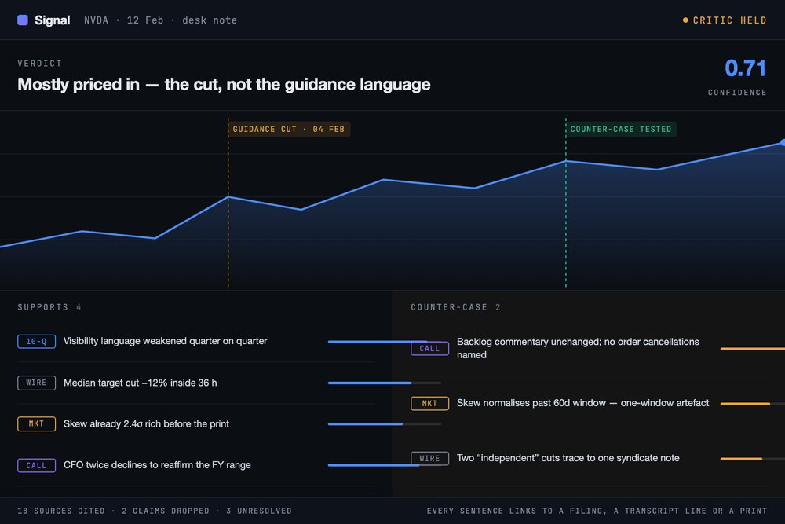
Run console · desk note
Private
W-08Multi-agent · finance
An AI analyst for financial news
Agentic News System
A planner splits the question, tool-using agents gather evidence, a critic argues the other side before a human sees it.
LangGraph · Azure OpenAI · MCPPrivate · walkthrough on request